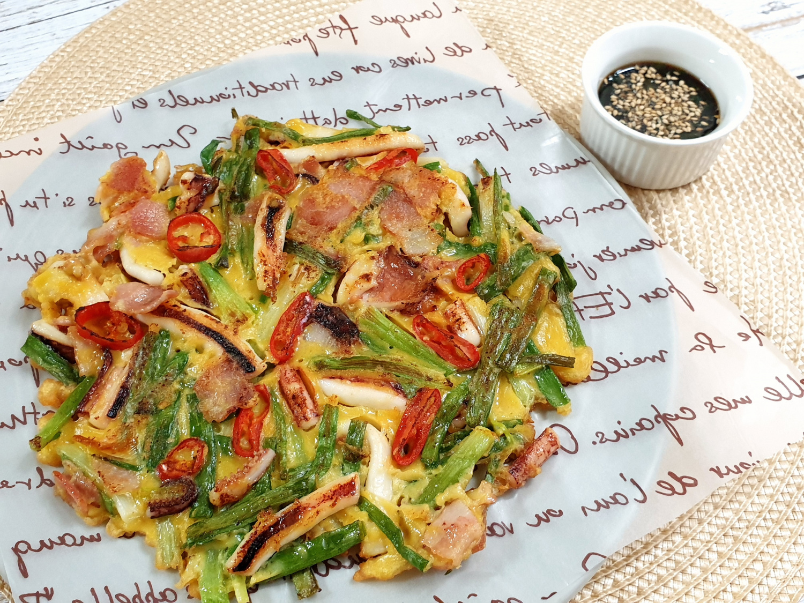

Ingredients
- 200g Green Onions
- 1 Squid (cleaned and sliced)
- 2 Handfuls of Shrimp
- 2 Eggs
- For Batter:
- 1/2 Cup Flour
- 1/2 Cup Tempura Flour
- 1 Cup Water
- 2 Tbsp Cornstarch
- For Dipping Sauce:
- 3 Tbsp Soy Sauce
- 1 Tbsp Red Chili Powder
- 1 Tbsp Vinegar
- 1 Tbsp Sugar
- 1/2 Tbsp Minced Garlic
- 1/2 Tbsp Minced Green Onion
- 1/2 Tbsp Sesame Seeds
- 1/2 Tbsp Sesame Oil
Steps
- Wash and trim green onions, then cut them in half.
- Prepare the batter by mixing flour, tempura flour, water, and cornstarch.
- Blanch squid and shrimp in boiling water for 1 minute, then set aside.
- In a large mixing bowl, coat green onions with the batter.
- Heat a generous amount of oil in a pan and spread the green onions evenly on it.
- Top with squid and shrimp, then pour the remaining batter and beaten eggs over the top.
- Cook over medium heat until the bottom is golden and crispy. Flip and cook the other side.
- Prepare the dipping sauce by combining all the sauce ingredients in a bowl.
- Serve the pancake hot with the dipping sauce on the side.
This crispy and savory pancake is perfect for sharing on a rainy day!